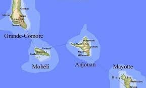
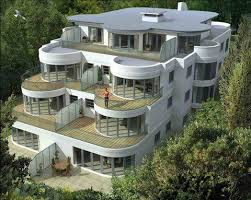

les îles
Comores
L'archipel des comres est formé par quatre îles...
Voir l'article
La population des Comores, pour une grande part d'origine ethnique bantou, est essentiellement musulmane sunnite de rite chaféite. La religion structure en grande partie la société, mais de nombreuses coutumes et schémas sociaux propres aux peuples d'Afrique de l'Est (culture swahili), sont profondément ancrés dans la vie de tous les jours : * Famille matrilinéaires et également matrilocales (la maison appartient à la femme1)
Regroupement par classe d'âge et rites initiatiques ou de passages… Chaque Comorien, possède un lien très fort avec son village d'origine (ethnie) et entretient des liens privilégiés avec les membres de son village. La tradition de l'accueil et de l'hospitalité. A la différence des autres îles, la culture malgache est très présente à Mayotte. Le Kibushi (langue sakalave) est la langue maternelle de près de 20% de la population, plusieurs villages sont malgachophones, ainsi que de nombreux toponymes. De nombreuses traditions et pratiques culturelles sont partagées avec les régions de Mahajanga, Nosy-Be et Antsiranana (Diego-Suarez) depuis plusieurs siècles comme en témoigne plusieurs découvertes archéologiques (Civilisation de Dembeni, d'Accoua XIe - XIVe siècle.